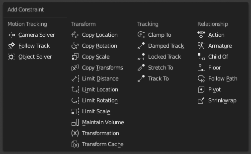

添加/移除约束¶
关于本页所描述的物体约束使用方法也可以用在骨骼约束中。
选项卡¶
参考
- 模式
物体模式
- 菜单
若要添加约束在Constraints(约束)选项卡点击 Add Object Constraint(添加对象约束) 菜单。

移除约束 点击在 标题栏 右边的"X" 按钮。
Track 跟踪¶
参考
- 模式
物体模式
- 面板
为非激活的选择物体添加约束，目标对象是激活选择物体。而激活选择物体不会被添加约束。
- Clear Track 清除跟踪
从选定的对象中删除所有阻尼跟踪，标准跟踪和锁定跟踪约束。
- 清除跟踪并保持当前变换(取消跟随)
移除选定对象的所有跟踪约束，并保持由跟踪引起的最终变换。